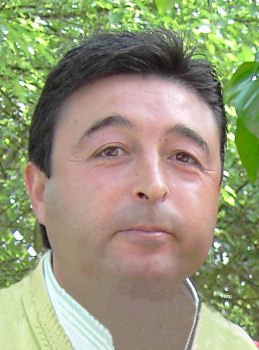

Manuel Rubio Izquierdo
Manuel Rubio Izquierdo 

 Haz clic aquí para detalles de la Familia de Manuel con Catalina Servando Cerezo
Haz clic aquí para detalles de la Familia de Manuel con Catalina Servando Cerezo
This page is within a frameset. View the entire genealogy report of Rubio Izquierdo families, or surname index of Rubio Izquierdo pedigrees or report summary of Rubio Izquierdo heritage from "Árbol Genealógico de Manolo y Amalia".
Ancestry Research Software.
© 2006 GenoPro Inc. All Rights Reserved.